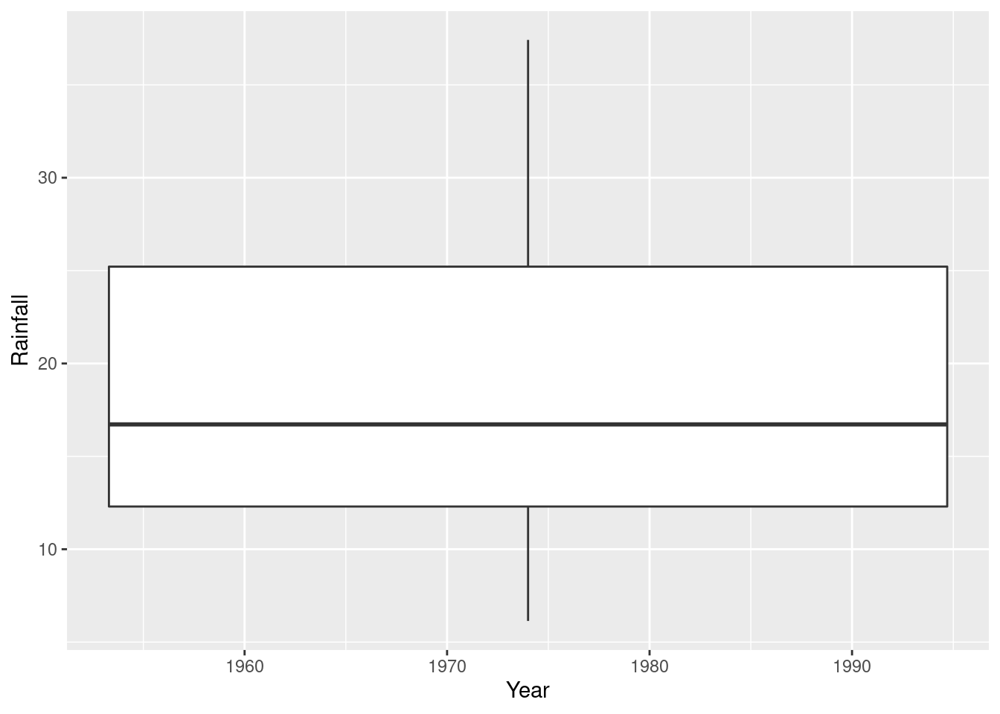

Chapter 25 Bayesian Statistics with Stan
Packages for this chapter:
25.1 Estimating proportion in favour from a survey
You are probably familiar with the kind of surveys where you are given a statement, like “I am the kind of person that finishes a task they start”, and you have to express your agreement or disagreement with it. Usually, you are given a five-point or seven-point scale on which you express your level of agreement (from “strongly agree” through “neither agree nor disagree” to “strongly disagree”, for example). Here, we will simplify things a little and only allow respondents to agree or disagree. So the kind of data you would have is a number of people that took part, and the number of these that said “agree”.
Common assumptions that are made in this kind of analysis are: (i) the responses are independent of each other, and (ii) each respondent has the same unknown probability of agreeing. You might quibble about (ii), but the assumption we are making here is that we know nothing about the respondents apart from whether they agreed or disagreed. (In practice, we’d collect all kinds of demographic information about each respondent, and this might give us a clue about how they’ll respond, but here we’re keeping it simple.) Under our assumptions, the number of respondents that agree has a binomial distribution with \(n\) being our sample size, and \(p\) being the probability we are trying to estimate. Let’s estimate \(p\) using Stan: that is to say, let’s obtain the posterior distribution of \(p\).
In R Studio, open a new Stan file (with File, New File, Stan File). You’ll see a template file of Stan code. Edit the
modelsection to reflect that you have observed a number of successesxthat we are modelling to have a binomial distribution with number of trialsnand success probabilityp.In the line of Stan code you wrote, there should be three variables. Which of these are parameters and which are data? Explain briefly.
I hope you found that there is only one parameter,
p, in this problem. We know that \(0 \le p \le 1\), and we need a prior distribution for it. A common choice is a beta distribution. Look at the Stan manual, link. The density function is given in 19.1.1. It has two parameters \(\alpha>0\) and \(\beta>0\). \(B(\alpha, \beta)\) given there is a constant. Add to yourmodelsection to express thatphas a prior distribution with parametersalphaandbeta. (alphaandbetawill be input data when we run this code.)Above your
modelsection, complete aparameterssection that says what kind of variablepis. Ifphas upper or lower limits, put these in as well. You can edit theparameterssection that is in the template.Everything else is
data. Complete adatasection (edit the one in the template) to say what type of thing everything else is, including limits if it has any. Don’t forget the parameters in the prior distribution!Save your code, if you haven’t already. I used the filename
binomial.stan. In your Stan code window, at the top right, you’ll see a button marked Check. This checks whether your code is syntactically correct. Click it.Compile your model. (This may take a minute or so, depending on how fast your R Studio is.) When the spinny thing stops spinning, it’s done.
In most surveys, the probability to be estimated is fairly close to 0.5. A beta prior with \(\alpha=\beta=2\) expresses the idea that any value of
pis possible, but values near 0.5 are more likely.
A survey of 277 randomly selected adult female shoppers was taken. 69 of them agreed that when an advertised item is not available at the local supermarket, they request a raincheck.
Using the above information, set up a data list suitable for input to a run of stan.
- Sample from the posterior distribution of
pwith these data, and display your results.
Obtain a 90% posterior interval for the probability that a randomly chosen adult female shopper will request a raincheck.
Obtain a 95% (frequentist) confidence interval for
p, and compare the results. (Hint:prop.test.) Comment briefly.(optional) This is one of those problems where you can obtain the answer analytically. What is the posterior distribution of \(p\), using a prior \(beta(\alpha, \beta)\) distribution for \(p\) and observing \(x\) successes out of \(n\) trials?
25.2 Bayesian regression
In this question, we will develop Stan code to run a simple linear regression, and later apply it to some data (and do a bit of elicitation of prior distributions along the way).
Create a
.stanfile that will run a simple linear regression predicting a variableyfrom a variablex, estimating an interceptaand a slopeb. Use normal prior distributions foraandb, and allow the means and SDs of the prior distributions foraandbto be specified (as data, later). The regression model says that the responseyhas a normal distribution with meana+bxand SDsigmawhich is also estimated. Give this a prior chi-squared distribution with a prior mean that is also input.Check your Stan code for syntactic correctness, and when it is correct, compile it.
We are going to be analyzing some data on vocabulary size (the number of words known) by children of different ages. It is suspected that the relationship between age and vocabulary size is approximately linear. You go consult with an early childhood expert, and they tell you this:
In children of age up to about six, vocabulary almost always increases by between 300 and 700 words per year.
I can’t talk about vocabulary of children of age 0, because children don’t start learning to talk until age about 18 months (1.5 years).
Children of age 1.5 years almost always have a vocabulary between 0 and 500 words (depending on exactly what age they started talking.)
Even if we know a child’s age, our prediction of their vocabulary size might be off by as much as 200 words.
Use this information to obtain parameters for your prior distributions.
Some data were collected on age and vocabulary size of 10 randomly selected children, shown here: link. Read in and display the data; the values are separated by single spaces.
Use this dataset, along with your prior distribution from above, to obtain posterior distributions for intercept, slope and error SD. What is the 95% posterior interval for the slope?
Plot a histogram of the posterior distribution of the slope. Does its shape surprise you? Explain briefly.
What can we say about the vocabulary size of a randomly selected child of age 5 (a new one, not the one in the original data set)? Use an appropriate predictive distribution.
25.3 Estimating \(p\) the Bayesian way
A binomial experiment with 8 trials produces the following results: success, failure, success, success, failure, success, success, success. (Each result is therefore a Bernoulli trial.) The person who gave you the data says that the success probability is most likely somewhere near 0.5, but might be near 0 or 1. The aim of this question is to estimate the success probability using Bayesian methods.
In this question, use cmdstanr (see this site for instructions). Documentation for Stan is here. You will probably want to be running R on your own computer.
Write a Stan program that will estimate the success probability \(p\). To do this, start with the likelihood (Stan has a function
bernoullithat takes one parameter, the success probability). The data, as 1s and 0s, will be in a vectorx. Use a beta distribution with unknown parameters as a prior forp. (We will worry later what those parameters should be.)Compile your code, correcting any errors until it compiles properly.
The person who brought you the data told you that the success probability
pshould be somewhere near 0.5 (and is less likely to be close to 0 or 1). Use this information to pick a prior distribution forp. (The exact answer you get doesn’t really matter, but try to interpret the statement in some kind of sensible way.)Create an R
listthat contains all yourdatafor your Stan model. Remember that Stan expects the data inxto be 0s and 1s.Run your Stan model to obtain a simulated posterior distribution, using all the other defaults.
Make a plot of the posterior distribution of the probability of success. (Use the
posteriorandbayesplotpackages if convenient.)The posterior predictive distribution is rather odd here: the only possible values that can be observed are 0 and 1. Nonetheless, obtain the posterior predictive distribution for these data, and explain briefly why it is not surprising that it came out as it did.
My solutions follow:
25.4 Estimating proportion in favour from a survey
You are probably familiar with the kind of surveys where you are given a statement, like “I am the kind of person that finishes a task they start”, and you have to express your agreement or disagreement with it. Usually, you are given a five-point or seven-point scale on which you express your level of agreement (from “strongly agree” through “neither agree nor disagree” to “strongly disagree”, for example). Here, we will simplify things a little and only allow respondents to agree or disagree. So the kind of data you would have is a number of people that took part, and the number of these that said “agree”.
Common assumptions that are made in this kind of analysis are: (i) the responses are independent of each other, and (ii) each respondent has the same unknown probability of agreeing. You might quibble about (ii), but the assumption we are making here is that we know nothing about the respondents apart from whether they agreed or disagreed. (In practice, we’d collect all kinds of demographic information about each respondent, and this might give us a clue about how they’ll respond, but here we’re keeping it simple.) Under our assumptions, the number of respondents that agree has a binomial distribution with \(n\) being our sample size, and \(p\) being the probability we are trying to estimate. Let’s estimate \(p\) using Stan: that is to say, let’s obtain the posterior distribution of \(p\).
- In R Studio, open a new Stan file (with File, New File, Stan File).
You’ll see a template file of Stan code.
Edit the
modelsection to reflect that you have observed a number of successesxthat we are modelling to have a binomial distribution with number of trialsnand success probabilityp.
Solution
This is quicker to do than to ask for. Make a guess at this:
model {
// likelihood
x ~ binomial(n, p);
}and then check the manual link, looking for Sampling Statement, to make sure that this is what is expected. It is. (I got to this page by googling “Stan binomial distribution”.)
The “likelihood” line with the two slashes is a comment, C++ style. It is optional, but I like to have it to keep things straight.
\(\blacksquare\)
- In the line of Stan code you wrote, there should be three variables. Which of these are parameters and which are data? Explain briefly.
Solution
The way to think about this is to ask yourself which of x, n, and p are being given to the Stan code as data, and which you are trying to estimate.
The only thing we are estimating here is p, so that is a parameter.
The number of trials n and the number of successes x are data that you will observe (treated as “given” or “fixed” in the Bayesian framework).
\(\blacksquare\)
- I hope you found that there is only one parameter,
p, in this problem. We know that \(0 \le p \le 1\), and we need a prior distribution for it. A common choice is a beta distribution. Look at the Stan manual, link. The density function is given in 19.1.1. It has two parameters \(\alpha>0\) and \(\beta>0\). \(B(\alpha, \beta)\) given there is a constant. Add to yourmodelsection to express thatphas a prior distribution with parametersalphaandbeta. (alphaandbetawill be input data when we run this code.)
Solution
Your model section should now look like this:
model {
// prior
p ~ beta(alpha, beta);
// likelihood
x ~ binomial(n, p);
}
\(\blacksquare\)
- Above your
modelsection, complete aparameterssection that says what kind of variablepis. Ifphas upper or lower limits, put these in as well. You can edit theparameterssection that is in the template.
Solution
p is a real variable taking values between 0 and 1, so this:
parameters {
real<lower=0, upper=1> p;
}
\(\blacksquare\)
- Everything else is
data. Complete adatasection (edit the one in the template) to say what type of thing everything else is, including limits if it has any. Don’t forget the parameters in the prior distribution!
Solution
We said before that n and x were (genuine) data. These are positive integers; also x cannot be bigger than n (why not?).
In the data section also go the parameters alpha and beta of the prior distribution. These are real numbers bigger than zero.
These two together give us this:
data {
int<lower=0> n;
int<lower=0, upper=n> x;
real<lower=0> alpha;
real<lower=0> beta;
}
Putting in lower and upper limits, if you have them, will help because if you happen to enter data that does not respect the limits, you’ll get an error right there, and you won’t waste time sampling.
It is more important to put in limits in the parameters section, because that is telling the sampler not to go there (eg. a value of \(p\) outside \([0,1]\)).
\(\blacksquare\)
- Save your code, if you haven’t already. I used the filename
binomial.stan. In your Stan code window, at the top right, you’ll see a button marked Check. This checks whether your code is syntactically correct. Click it.
Solution
This appeared in my console:
> rstan:::rstudio_stanc("binomial.stan")
binomial.stan is syntactically correct.
If you don’t see this, there is some kind of code error. You’ll then see some output that points you to a line of your code. The error is either there or at the end of the previous line (eg. you forgot a semicolon). Here is a typical one:
> rstan:::rstudio_stanc("binomial.stan")
SYNTAX ERROR, MESSAGE(S) FROM PARSER:
error in 'model377242ac03ef_binomial' at line 24, column 0
-------------------------------------------------
22: parameters {
23: real<lower=0, upper=1> p
24: }
^
25:
-------------------------------------------------
PARSER EXPECTED: ";"
Error in stanc(filename, allow_undefined = TRUE) :
failed to parse Stan model 'binomial' due to the above error.
The compiler (or at least the code checker) was expecting a semicolon, and when it got to the close-curly-bracket on line 24, that was where it knew that the semicolon was missing (and thus it objected there and not earlier).
The above was on my own computer. When I tried it on rstudio.cloud, I thought I had everything correct but I got an error message like this:
Error in sink(type = "output") : invalid connection
that I couldn’t get rid of. This might happen to you also. If you get an error, fix it and check again. Repeat until your code is “syntactically correct”. (That means that it will compile, but not that it will necessarily do what you want.) This process is an integral part of coding, so get used to it. It doesn’t matter how many errors you make; what matters is that you find and correct them all.
\(\blacksquare\)
- Compile your model. (This may take a minute or so, depending on how fast your R Studio is.) When the spinny thing stops spinning, it’s done.
Solution
Go down to the console and type something like
If it doesn’t work, make sure you installed and loaded cmdstanr first, with install.packages and library respectively.
If it sits there and does nothing for a while, this is actually a good sign. If it finds an error, it will tell you. If you get your command prompt > back without it saying anything, that means it worked. (This is a Unix thing: no comment means no error.)
If you happen to compile it a second time, without changing anything in the Stan code, it won’t make you wait while it compiles again: it will say “Model executable is up to date!”.
\(\blacksquare\)
- In most surveys, the probability to be estimated is fairly close to 0.5.
A beta prior with \(\alpha=\beta=2\) expresses the idea that any value of
pis possible, but values near 0.5 are more likely.
A survey of 277 randomly selected adult female shoppers was taken. 69 of them agreed that when an advertised item is not available at the local supermarket, they request a raincheck.
Using the above information, set up a data list suitable for input to a run of stan.
Solution
Look in your data section, and see what you need to provide values for.
The order doesn’t matter; make a list with the named pieces and their values, in some order. You need values for these four things:
Extra: in case you are wondering where the parameters for the prior came from: in this case, I looked on the Wikipedia page for the beta distribution and saw that \(\alpha=\beta=2\) is a good shape, so I used that.
In practice, getting a reasonable prior is a more difficult problem, called “elicitation”.
What you have to do is ask a subject matter expert what they think p might be, giving you a range of values such as a guessed-at 95% confidence interval, like “I think p is almost certainly between 0.1 and 0.6”.
Then you as a statistician have to choose values for alpha and beta that match this, probably by trial and error.
The beta distribution is part of R, so this is doable, for example like this:
crossing(alpha = 1:10, beta = 1:10) %>%
mutate(
lower = qbeta(0.025, alpha, beta),
upper = qbeta(0.975, alpha, beta)
) %>%
mutate(sse = (lower - 0.1)^2 + (upper - 0.6)^2) %>%
arrange(sse)## # A tibble: 100 x 5
## alpha beta lower upper sse
## <int> <int> <dbl> <dbl> <dbl>
## 1 4 8 0.109 0.610 0.000181
## 2 3 7 0.0749 0.600 0.000632
## 3 4 9 0.0992 0.572 0.000793
## 4 5 10 0.128 0.581 0.00112
## 5 5 9 0.139 0.614 0.00169
## 6 3 6 0.0852 0.651 0.00280
## 7 3 8 0.0667 0.556 0.00303
## 8 4 7 0.122 0.652 0.00322
## 9 4 10 0.0909 0.538 0.00391
## 10 6 10 0.163 0.616 0.00428
## # … with 90 more rowsThis says that \(\alpha=4, \beta=8\) is a pretty good choice.36
My process:
Pick some values of
alphaandbetato try, and make all possible combinations of them.Find the 2.5 and 97.5 percentiles of the beta distribution for each of those values. The “inverse CDF” (the value \(x\) that has this much of the probability below it) is what we want here; this is obtained in R by putting
qin front of the name of the distribution. For example, does this make sense to you?
## [1] -1.959964We want the lower limit to be close to 0.1 and the upper limit to be close to 0.6. Working out the sum of squared errors for each
alpha-betacombo is a way to do this; ifsseis small, that combination ofalphaandbetagave lower and upper limits close to 0.1 and 0.6.Arrange the
ssevalues smallest to largest. The top rows are the best choices ofalphaandbeta.
\(\blacksquare\)
- Sample from the posterior distribution of
pwith these data, and display your results.
Solution
This is what I got:
## Running MCMC with 4 sequential chains...
##
## Chain 1 Iteration: 1 / 2000 [ 0%] (Warmup)
## Chain 1 Iteration: 100 / 2000 [ 5%] (Warmup)
## Chain 1 Iteration: 200 / 2000 [ 10%] (Warmup)
## Chain 1 Iteration: 300 / 2000 [ 15%] (Warmup)
## Chain 1 Iteration: 400 / 2000 [ 20%] (Warmup)
## Chain 1 Iteration: 500 / 2000 [ 25%] (Warmup)
## Chain 1 Iteration: 600 / 2000 [ 30%] (Warmup)
## Chain 1 Iteration: 700 / 2000 [ 35%] (Warmup)
## Chain 1 Iteration: 800 / 2000 [ 40%] (Warmup)
## Chain 1 Iteration: 900 / 2000 [ 45%] (Warmup)
## Chain 1 Iteration: 1000 / 2000 [ 50%] (Warmup)
## Chain 1 Iteration: 1001 / 2000 [ 50%] (Sampling)
## Chain 1 Iteration: 1100 / 2000 [ 55%] (Sampling)
## Chain 1 Iteration: 1200 / 2000 [ 60%] (Sampling)
## Chain 1 Iteration: 1300 / 2000 [ 65%] (Sampling)
## Chain 1 Iteration: 1400 / 2000 [ 70%] (Sampling)
## Chain 1 Iteration: 1500 / 2000 [ 75%] (Sampling)
## Chain 1 Iteration: 1600 / 2000 [ 80%] (Sampling)
## Chain 1 Iteration: 1700 / 2000 [ 85%] (Sampling)
## Chain 1 Iteration: 1800 / 2000 [ 90%] (Sampling)
## Chain 1 Iteration: 1900 / 2000 [ 95%] (Sampling)
## Chain 1 Iteration: 2000 / 2000 [100%] (Sampling)
## Chain 1 finished in 0.0 seconds.
## Chain 2 Iteration: 1 / 2000 [ 0%] (Warmup)
## Chain 2 Iteration: 100 / 2000 [ 5%] (Warmup)
## Chain 2 Iteration: 200 / 2000 [ 10%] (Warmup)
## Chain 2 Iteration: 300 / 2000 [ 15%] (Warmup)
## Chain 2 Iteration: 400 / 2000 [ 20%] (Warmup)
## Chain 2 Iteration: 500 / 2000 [ 25%] (Warmup)
## Chain 2 Iteration: 600 / 2000 [ 30%] (Warmup)
## Chain 2 Iteration: 700 / 2000 [ 35%] (Warmup)
## Chain 2 Iteration: 800 / 2000 [ 40%] (Warmup)
## Chain 2 Iteration: 900 / 2000 [ 45%] (Warmup)
## Chain 2 Iteration: 1000 / 2000 [ 50%] (Warmup)
## Chain 2 Iteration: 1001 / 2000 [ 50%] (Sampling)
## Chain 2 Iteration: 1100 / 2000 [ 55%] (Sampling)
## Chain 2 Iteration: 1200 / 2000 [ 60%] (Sampling)
## Chain 2 Iteration: 1300 / 2000 [ 65%] (Sampling)
## Chain 2 Iteration: 1400 / 2000 [ 70%] (Sampling)
## Chain 2 Iteration: 1500 / 2000 [ 75%] (Sampling)
## Chain 2 Iteration: 1600 / 2000 [ 80%] (Sampling)
## Chain 2 Iteration: 1700 / 2000 [ 85%] (Sampling)
## Chain 2 Iteration: 1800 / 2000 [ 90%] (Sampling)
## Chain 2 Iteration: 1900 / 2000 [ 95%] (Sampling)
## Chain 2 Iteration: 2000 / 2000 [100%] (Sampling)
## Chain 2 finished in 0.0 seconds.
## Chain 3 Iteration: 1 / 2000 [ 0%] (Warmup)
## Chain 3 Iteration: 100 / 2000 [ 5%] (Warmup)
## Chain 3 Iteration: 200 / 2000 [ 10%] (Warmup)
## Chain 3 Iteration: 300 / 2000 [ 15%] (Warmup)
## Chain 3 Iteration: 400 / 2000 [ 20%] (Warmup)
## Chain 3 Iteration: 500 / 2000 [ 25%] (Warmup)
## Chain 3 Iteration: 600 / 2000 [ 30%] (Warmup)
## Chain 3 Iteration: 700 / 2000 [ 35%] (Warmup)
## Chain 3 Iteration: 800 / 2000 [ 40%] (Warmup)
## Chain 3 Iteration: 900 / 2000 [ 45%] (Warmup)
## Chain 3 Iteration: 1000 / 2000 [ 50%] (Warmup)
## Chain 3 Iteration: 1001 / 2000 [ 50%] (Sampling)
## Chain 3 Iteration: 1100 / 2000 [ 55%] (Sampling)
## Chain 3 Iteration: 1200 / 2000 [ 60%] (Sampling)
## Chain 3 Iteration: 1300 / 2000 [ 65%] (Sampling)
## Chain 3 Iteration: 1400 / 2000 [ 70%] (Sampling)
## Chain 3 Iteration: 1500 / 2000 [ 75%] (Sampling)
## Chain 3 Iteration: 1600 / 2000 [ 80%] (Sampling)
## Chain 3 Iteration: 1700 / 2000 [ 85%] (Sampling)
## Chain 3 Iteration: 1800 / 2000 [ 90%] (Sampling)
## Chain 3 Iteration: 1900 / 2000 [ 95%] (Sampling)
## Chain 3 Iteration: 2000 / 2000 [100%] (Sampling)
## Chain 3 finished in 0.0 seconds.
## Chain 4 Iteration: 1 / 2000 [ 0%] (Warmup)
## Chain 4 Iteration: 100 / 2000 [ 5%] (Warmup)
## Chain 4 Iteration: 200 / 2000 [ 10%] (Warmup)
## Chain 4 Iteration: 300 / 2000 [ 15%] (Warmup)
## Chain 4 Iteration: 400 / 2000 [ 20%] (Warmup)
## Chain 4 Iteration: 500 / 2000 [ 25%] (Warmup)
## Chain 4 Iteration: 600 / 2000 [ 30%] (Warmup)
## Chain 4 Iteration: 700 / 2000 [ 35%] (Warmup)
## Chain 4 Iteration: 800 / 2000 [ 40%] (Warmup)
## Chain 4 Iteration: 900 / 2000 [ 45%] (Warmup)
## Chain 4 Iteration: 1000 / 2000 [ 50%] (Warmup)
## Chain 4 Iteration: 1001 / 2000 [ 50%] (Sampling)
## Chain 4 Iteration: 1100 / 2000 [ 55%] (Sampling)
## Chain 4 Iteration: 1200 / 2000 [ 60%] (Sampling)
## Chain 4 Iteration: 1300 / 2000 [ 65%] (Sampling)
## Chain 4 Iteration: 1400 / 2000 [ 70%] (Sampling)
## Chain 4 Iteration: 1500 / 2000 [ 75%] (Sampling)
## Chain 4 Iteration: 1600 / 2000 [ 80%] (Sampling)
## Chain 4 Iteration: 1700 / 2000 [ 85%] (Sampling)
## Chain 4 Iteration: 1800 / 2000 [ 90%] (Sampling)
## Chain 4 Iteration: 1900 / 2000 [ 95%] (Sampling)
## Chain 4 Iteration: 2000 / 2000 [100%] (Sampling)
## Chain 4 finished in 0.0 seconds.
##
## All 4 chains finished successfully.
## Mean chain execution time: 0.0 seconds.
## Total execution time: 1.0 seconds.## variable mean median sd mad q5 q95 rhat ess_bulk ess_tail
## lp__ -159.36 -159.07 0.72 0.32 -160.87 -158.84 1.00 1877 2329
## p 0.25 0.25 0.03 0.03 0.21 0.30 1.00 1341 2085Your results should be similar, though probably not identical, to mine. (There is a lot of randomness involved here.)
\(\blacksquare\)
- Obtain a 90% posterior interval for the probability that a randomly chosen adult female shopper will request a raincheck.
Solution
Read off the q5 and q95 values for p. Mine are 0.21 and 0.29.
\(\blacksquare\)
- Obtain a 95% (frequentist) confidence interval for
p, and compare the results. (Hint:prop.test.) Comment briefly.
Solution
If you remember this well enough, you can do it by hand, but there’s no need:
##
## 1-sample proportions test with continuity correction
##
## data: 69 out of 277, null probability 0.5
## X-squared = 68.751, df = 1, p-value < 2.2e-16
## alternative hypothesis: true p is not equal to 0.5
## 95 percent confidence interval:
## 0.2001721 0.3051278
## sample estimates:
## p
## 0.2490975My 95% intervals are very close.
Numerically, this is because the only (material) difference between
them is the presence of the prior in the Bayesian approach. We have
quite a lot of data, though, so the choice of prior is actually not
that important (“the data overwhelm the prior”). I could have used
alpha=8, beta=4 that I obtained in the Extra above, and it
wouldn’t have made any noticeable difference.
Conceptually, though, the interpretations of these intervals are very different: the Bayesian posterior interval really does say “the probability of \(p\) being between 0.20 and 0.31 is 0.95”, while for the confidence interval you have to talk about repeated sampling: “the procedure producing the 95% confidence interval will contain the true value of \(p\) in 95% of all possible samples”. This might seem clunky in comparison; a Bayesian would tell you that the interpretation of the posterior interval is what you want the interpretation of the confidence interval to be!
\(\blacksquare\)
- (optional) This is one of those problems where you can obtain the answer analytically. What is the posterior distribution of \(p\), using a prior \(beta(\alpha, \beta)\) distribution for \(p\) and observing \(x\) successes out of \(n\) trials?
Solution
With this stuff, you can throw away any constants.
The likelihood is (proportional to) \[ p^x (1-p)^{n-x}.\] There is a binomial coefficient that I threw away.
Look up the form of the beta density if you don’t know it (or look above): the prior for \(p\) is proportional to
\[ p^{\alpha-1} (1-p)^{\beta-1}.\]
Posterior is proportional to likelihood times prior:
\[ p^{x + \alpha - 1} (1-p)^{n-x +\beta - 1}\]
which is recognized as a beta distribution with parameters \(x+\alpha\), \(n-x+\beta\). Typically (unless you are very sure about \(p\) a priori (that is, before collecting any data)), \(x\) and \(n-x\) will be much larger than \(\alpha\) and \(\beta\), so this will look a lot like a binomial likelihood, which is why the confidence interval and posterior interval in our example came out very similar. I leave it to you to decide which you prefer: algebra and intelligence (and luck, often), or writing code to sample from the posterior. I know what I prefer!
Extra: one of the people behind Stan is on Twitter with handle @betanalpha.
\(\blacksquare\)
25.5 Bayesian regression
In this question, we will develop Stan code to run a simple linear regression, and later apply it to some data (and do a bit of elicitation of prior distributions along the way).
- Create a
.stanfile that will run a simple linear regression predicting a variableyfrom a variablex, estimating an interceptaand a slopeb. Use normal prior distributions foraandb, and allow the means and SDs of the prior distributions foraandbto be specified (as data, later). The regression model says that the responseyhas a normal distribution with meana+bxand SDsigmawhich is also estimated. Give this a prior chi-squared distribution with a prior mean that is also input.
Solution
This is a lot. Breathe. Pause. Then, in R Studio, File, New File and Stan File. Leave the template there, and change what you need as you go.
I would start with the model part. The likelihood part says that y has a normal distribution with mean a+bx and SD sigma, thus:
// likelihood
y ~ normal(a+b*x, sigma);
There is a subtlety here that I’ll get to later, but this is the easiest way to begin.
Next, take a look at what’s here. x and y are
data, and the other things, a, b, sigma
are parameters. These last three need prior distributions. I said
to use normal distributions for the first two, and a chi-squared
distribution for the last one. (In practice, of course, you get to
choose these, in consultation with the subject matter expert, but
these are likely to be pretty reasonable.) I’ve given the
parameters of these prior distributions longish names, so I hope
I’m trading more typing for less confusion:
model {
// prior
a ~ normal(prior_int_mean, prior_int_sd);
b ~ normal(prior_slope_mean, prior_slope_sd);
sigma ~ chi_square(prior_sigma_mean);
// likelihood
y ~ normal(a+b*x, sigma);
}
The chi-squared distribution is written that way in Stan, and has only one parameter, a degrees of freedom that is also its mean.
Our three parameters then need to be declared, in the
parameters section. a and b can be any
real number, while sigma has to be positive:
parameters {
real a;
real b;
real<lower=0> sigma;
}
Everything else is data, and we have a lot of data this time:
data {
int<lower=0> n;
vector[n] x;
vector[n] y;
real prior_int_mean;
real<lower=0> prior_int_sd;
real prior_slope_mean;
real<lower=0> prior_slope_sd;
real<lower=0> prior_sigma_mean;
}
The five things at the bottom are the prior distribution parameters,
which we are going to be eliciting later. The means for intercept and
slope can be anything; the prior SDs have to be positive, and so does
the prior mean for sigma, since it’s actually a degrees of
freedom that has to be positive.
Now we come to two pieces of subtlety. The first is that the
x and y are going to have some (unknown) number of
values in them, but we need to declare them with some length. The
solution to that is to have the number of observations n also
be part of the data. Once we have that, we can declare x and
y to be of length n with no problems.
The second piece of subtlety is that you were probably expecting this:
real x[n];
real y[n];
This is usually what you need, but the problem is that when you work
out a+b*x later on, it doesn’t work because you are
trying to multiply an array of values x by a single value
b. (Try it.) There are two ways around this: (i), if you
instead declare x and y to be (real) vectors of
length n, Stan borrows from R’s multiplication of a vector by
a scalar and it works, by multiplying each element of the
vector by the scalar. Or, (ii), you can go back to declaring
x and y as real things of length n, and use
a loop to get each y from its corresponding x, like
this:
for (i in 1:n) {
y[i] ~ normal(a + b * x[i], sigma)
}
and this works because a, b, and x[i] are
all scalar. I have to say that I don’t really understand the
distinction between real x[n] and vector[n] x,
except that sometimes one works and the other doesn’t.
The manual tells you that the vector way is “much faster”,
though in a simple problem like this one I doubt that it makes any
noticeable difference.
My code looks like this, in total:
data {
int<lower=0> n;
vector[n] x;
vector[n] y;
real prior_int_mean;
real<lower=0> prior_int_sd;
real prior_slope_mean;
real<lower=0> prior_slope_sd;
real<lower=0> prior_sigma_mean;
}
parameters {
real a;
real b;
real<lower=0> sigma;
}
model {
// prior
a ~ normal(prior_int_mean, prior_int_sd);
b ~ normal(prior_slope_mean, prior_slope_sd);
sigma ~ chi_square(prior_sigma_mean);
// likelihood
y ~ normal(a+b*x, sigma);
}
\(\blacksquare\)
- Check your Stan code for syntactic correctness, and when it is correct, compile it.
Solution
Click the Check button top right of the window where your Stan code is. If it finds any errors, correct them and try again.
To compile, the usual thing:
and wait for it to do its thing. With luck, Check will have found all the errors and this will quietly (eventually) do its job.
\(\blacksquare\)
- We are going to be analyzing some data on vocabulary size (the number of words known) by children of different ages. It is suspected that the relationship between age and vocabulary size is approximately linear. You go consult with an early childhood expert, and they tell you this:
In children of age up to about six, vocabulary almost always increases by between 300 and 700 words per year.
I can’t talk about vocabulary of children of age 0, because children don’t start learning to talk until age about 18 months (1.5 years).
Children of age 1.5 years almost always have a vocabulary between 0 and 500 words (depending on exactly what age they started talking.)
Even if we know a child’s age, our prediction of their vocabulary size might be off by as much as 200 words.
Use this information to obtain parameters for your prior distributions.
Solution
This is the typical kind of way in which you would elicit a prior distribution; you try to turn what the expert tells you into something you can use.
Let’s assume that the “almost always” above corresponds to a 95% confidence interval, and since our intercept and slope have prior normal distributions, this is, to the accuracy that we are working, mean plus/minus 2 SD. (You can make different assumptions and you’ll get a somewhat different collection of prior distributions.)
The first statement talks about the change in vocabulary size per year. This is talking about the slope. The supposed 95% confidence interval given translates to \(500 \pm 2(100)\), so the prior mean for the slope is 500 and the prior SD is 100.
Not so hard. The problems start with the second one.
We want a prior mean and SD for the intercept, that is, for the mean and SD of vocabulary size at age 0, but the expert (in their second statement) is telling us this makes no sense. The third statement says that at age 1.5, a 95% CI for vocabulary size is \(250 \pm 2(125)\). You can go a number of different ways from here, but a simple one is use our best guess for the slope, 500, to project back 1.5 years from here by decreasing the mean by \((500)(1.5)=750\), that is, to \(-500 \pm 2(125)\).
The last one we need is the prior mean for sigma. This is what
the last statement is getting at. Up to you whether you think this
is an estimate of sigma or twice sigma. Let’s take 200 as
a prior estimate of sigma, to be safe.
You see that getting a useful prior depends on asking the right questions and making good use of the answers you get.
Some people like to use “ignorance” priors, where you assign equal probability to all possible values of the parameter. I don’t, because these are saying that a slope of 10 million is just as likely as a slope of 1, regardless of the actual circumstances; you will almost always have some idea of what you are expecting. It might be vague, but it won’t be infinitely vague.
\(\blacksquare\)
- Some data were collected on age and vocabulary size of 10 randomly selected children, shown here: link. Read in and display the data; the values are separated by single spaces.
Solution
Thus:
my_url <- "https://raw.githubusercontent.com/nxskok/pasias/master/vocab.txt"
vocabulary <- read_delim(my_url, " ")##
## ── Column specification ──────────────────────────────────────────────────────────────────────────────────────────────────────────────────────────────────────────────────────────────────────
## cols(
## age = col_double(),
## vocab = col_double()
## )## # A tibble: 10 x 2
## age vocab
## <dbl> <dbl>
## 1 1.5 100
## 2 2 250
## 3 2.5 460
## 4 3 890
## 5 3.5 1210
## 6 4 1530
## 7 4.5 1840
## 8 5 2060
## 9 5.5 2300
## 10 6 2500\(\blacksquare\)
- Use this dataset, along with your prior distribution from above, to obtain posterior distributions for intercept, slope and error SD. What is the 95% posterior interval for the slope?
Solution
Two parts: set up the data, and then sample it:
reg_data <- list(
n = 10, x = vocabulary$age, y = vocabulary$vocab,
prior_int_mean = -500,
prior_int_sd = 125,
prior_slope_mean = 500,
prior_slope_sd = 100,
prior_sigma_mean = 200
)
reg.1 <- reg$sample(reg_data)## Running MCMC with 4 sequential chains...
##
## Chain 1 Iteration: 1 / 2000 [ 0%] (Warmup)
## Chain 1 Iteration: 100 / 2000 [ 5%] (Warmup)
## Chain 1 Iteration: 200 / 2000 [ 10%] (Warmup)
## Chain 1 Iteration: 300 / 2000 [ 15%] (Warmup)
## Chain 1 Iteration: 400 / 2000 [ 20%] (Warmup)
## Chain 1 Iteration: 500 / 2000 [ 25%] (Warmup)
## Chain 1 Iteration: 600 / 2000 [ 30%] (Warmup)
## Chain 1 Iteration: 700 / 2000 [ 35%] (Warmup)
## Chain 1 Iteration: 800 / 2000 [ 40%] (Warmup)
## Chain 1 Iteration: 900 / 2000 [ 45%] (Warmup)
## Chain 1 Iteration: 1000 / 2000 [ 50%] (Warmup)
## Chain 1 Iteration: 1001 / 2000 [ 50%] (Sampling)
## Chain 1 Iteration: 1100 / 2000 [ 55%] (Sampling)
## Chain 1 Iteration: 1200 / 2000 [ 60%] (Sampling)
## Chain 1 Iteration: 1300 / 2000 [ 65%] (Sampling)
## Chain 1 Iteration: 1400 / 2000 [ 70%] (Sampling)
## Chain 1 Iteration: 1500 / 2000 [ 75%] (Sampling)
## Chain 1 Iteration: 1600 / 2000 [ 80%] (Sampling)
## Chain 1 Iteration: 1700 / 2000 [ 85%] (Sampling)
## Chain 1 Iteration: 1800 / 2000 [ 90%] (Sampling)
## Chain 1 Iteration: 1900 / 2000 [ 95%] (Sampling)
## Chain 1 Iteration: 2000 / 2000 [100%] (Sampling)
## Chain 1 finished in 0.1 seconds.
## Chain 2 Iteration: 1 / 2000 [ 0%] (Warmup)
## Chain 2 Iteration: 100 / 2000 [ 5%] (Warmup)
## Chain 2 Iteration: 200 / 2000 [ 10%] (Warmup)
## Chain 2 Iteration: 300 / 2000 [ 15%] (Warmup)
## Chain 2 Iteration: 400 / 2000 [ 20%] (Warmup)
## Chain 2 Iteration: 500 / 2000 [ 25%] (Warmup)
## Chain 2 Iteration: 600 / 2000 [ 30%] (Warmup)
## Chain 2 Iteration: 700 / 2000 [ 35%] (Warmup)
## Chain 2 Iteration: 800 / 2000 [ 40%] (Warmup)
## Chain 2 Iteration: 900 / 2000 [ 45%] (Warmup)
## Chain 2 Iteration: 1000 / 2000 [ 50%] (Warmup)
## Chain 2 Iteration: 1001 / 2000 [ 50%] (Sampling)
## Chain 2 Iteration: 1100 / 2000 [ 55%] (Sampling)
## Chain 2 Iteration: 1200 / 2000 [ 60%] (Sampling)
## Chain 2 Iteration: 1300 / 2000 [ 65%] (Sampling)
## Chain 2 Iteration: 1400 / 2000 [ 70%] (Sampling)
## Chain 2 Iteration: 1500 / 2000 [ 75%] (Sampling)
## Chain 2 Iteration: 1600 / 2000 [ 80%] (Sampling)
## Chain 2 Iteration: 1700 / 2000 [ 85%] (Sampling)
## Chain 2 Iteration: 1800 / 2000 [ 90%] (Sampling)
## Chain 2 Iteration: 1900 / 2000 [ 95%] (Sampling)
## Chain 2 Iteration: 2000 / 2000 [100%] (Sampling)
## Chain 2 finished in 0.1 seconds.
## Chain 3 Iteration: 1 / 2000 [ 0%] (Warmup)
## Chain 3 Iteration: 100 / 2000 [ 5%] (Warmup)
## Chain 3 Iteration: 200 / 2000 [ 10%] (Warmup)
## Chain 3 Iteration: 300 / 2000 [ 15%] (Warmup)
## Chain 3 Iteration: 400 / 2000 [ 20%] (Warmup)
## Chain 3 Iteration: 500 / 2000 [ 25%] (Warmup)
## Chain 3 Iteration: 600 / 2000 [ 30%] (Warmup)
## Chain 3 Iteration: 700 / 2000 [ 35%] (Warmup)
## Chain 3 Iteration: 800 / 2000 [ 40%] (Warmup)
## Chain 3 Iteration: 900 / 2000 [ 45%] (Warmup)
## Chain 3 Iteration: 1000 / 2000 [ 50%] (Warmup)
## Chain 3 Iteration: 1001 / 2000 [ 50%] (Sampling)
## Chain 3 Iteration: 1100 / 2000 [ 55%] (Sampling)
## Chain 3 Iteration: 1200 / 2000 [ 60%] (Sampling)
## Chain 3 Iteration: 1300 / 2000 [ 65%] (Sampling)
## Chain 3 Iteration: 1400 / 2000 [ 70%] (Sampling)
## Chain 3 Iteration: 1500 / 2000 [ 75%] (Sampling)
## Chain 3 Iteration: 1600 / 2000 [ 80%] (Sampling)
## Chain 3 Iteration: 1700 / 2000 [ 85%] (Sampling)
## Chain 3 Iteration: 1800 / 2000 [ 90%] (Sampling)
## Chain 3 Iteration: 1900 / 2000 [ 95%] (Sampling)
## Chain 3 Iteration: 2000 / 2000 [100%] (Sampling)
## Chain 3 finished in 0.1 seconds.
## Chain 4 Iteration: 1 / 2000 [ 0%] (Warmup)
## Chain 4 Iteration: 100 / 2000 [ 5%] (Warmup)
## Chain 4 Iteration: 200 / 2000 [ 10%] (Warmup)
## Chain 4 Iteration: 300 / 2000 [ 15%] (Warmup)
## Chain 4 Iteration: 400 / 2000 [ 20%] (Warmup)
## Chain 4 Iteration: 500 / 2000 [ 25%] (Warmup)
## Chain 4 Iteration: 600 / 2000 [ 30%] (Warmup)
## Chain 4 Iteration: 700 / 2000 [ 35%] (Warmup)
## Chain 4 Iteration: 800 / 2000 [ 40%] (Warmup)
## Chain 4 Iteration: 900 / 2000 [ 45%] (Warmup)
## Chain 4 Iteration: 1000 / 2000 [ 50%] (Warmup)
## Chain 4 Iteration: 1001 / 2000 [ 50%] (Sampling)
## Chain 4 Iteration: 1100 / 2000 [ 55%] (Sampling)
## Chain 4 Iteration: 1200 / 2000 [ 60%] (Sampling)
## Chain 4 Iteration: 1300 / 2000 [ 65%] (Sampling)
## Chain 4 Iteration: 1400 / 2000 [ 70%] (Sampling)
## Chain 4 Iteration: 1500 / 2000 [ 75%] (Sampling)
## Chain 4 Iteration: 1600 / 2000 [ 80%] (Sampling)
## Chain 4 Iteration: 1700 / 2000 [ 85%] (Sampling)
## Chain 4 Iteration: 1800 / 2000 [ 90%] (Sampling)
## Chain 4 Iteration: 1900 / 2000 [ 95%] (Sampling)
## Chain 4 Iteration: 2000 / 2000 [100%] (Sampling)
## Chain 4 finished in 0.1 seconds.
##
## All 4 chains finished successfully.
## Mean chain execution time: 0.1 seconds.
## Total execution time: 0.5 seconds.## variable mean median sd mad q5 q95 rhat ess_bulk ess_tail
## lp__ 373.66 373.98 1.24 1.02 371.15 375.04 1.00 1391 2037
## a -614.36 -615.82 99.82 101.26 -780.62 -451.19 1.01 1531 1577
## b 521.24 521.97 27.27 27.25 476.82 565.29 1.00 1548 1760
## sigma 189.52 189.15 19.51 19.06 157.58 222.73 1.00 1979 1781One line per parameter (plus the log-posterior distribution, not very useful to us). To get a 95% posterior interval for the slope, use the 2.5 and 97.5 percentiles of the posterior for b, which are 467 and 572. (This is about \(520 \pm 52\), rounding crudely, while the prior distribution said \(500 \pm 200\), so the data have allowed us to estimate the slope a fair bit more accurately.)
\(\blacksquare\)
- Plot a histogram of the posterior distribution of the slope. Does its shape surprise you? Explain briefly.
Solution
This is most easily mcmc_hist from bayesplot:

I’m guessing you have a better intuition for bins as opposed to binwidth (the latter being what you need here), so you can try it without giving a binwidth at all (and getting way too many bins), and then see if you can figure out what binwidth should be to get you a sensible number of bins. This one looks pretty good to me.
The shape is very normal. This is because everything is normal: the prior and the data-generating process both, so it is not surprising at all that the posterior came out normal. (You may remember from your regression course that if you have a normal regression model, the slope also has a normal distribution.)
\(\blacksquare\)
- What can we say about the vocabulary size of a randomly selected child of age 5 (a new one, not the one in the original data set)? Use an appropriate predictive distribution.
Solution
If you have done a regression course, you might recognize this as being the Bayesian version of a prediction interval. How might we make a predictive distribution for this? Well, first we need to extract the sampled values from the posteriors:
## # A tibble: 4,000 x 7
## lp__ a b sigma .chain .iteration .draw
## <dbl> <dbl> <dbl> <dbl> <int> <int> <int>
## 1 372. -666. 564. 217. 1 1 1
## 2 374. -576. 493. 188. 1 2 2
## 3 374. -631. 543. 186. 1 3 3
## 4 375. -596. 505. 193. 1 4 4
## 5 375. -580. 521. 195. 1 5 5
## 6 374. -503. 490. 194. 1 6 6
## 7 372. -545. 472. 208. 1 7 7
## 8 374. -507. 488. 215. 1 8 8
## 9 374. -645. 509. 184. 1 9 9
## 10 374. -615. 539. 172. 1 10 10
## # … with 3,990 more rowsand now we need to simulate some response values for our notional child of age 5. That means simulating for an x of 5, using each of those values of a, b and sigma:
## # A tibble: 4,000 x 8
## # Rowwise:
## lp__ a b sigma .chain .iteration .draw sim_vocab
## <dbl> <dbl> <dbl> <dbl> <int> <int> <int> <dbl>
## 1 372. -666. 564. 217. 1 1 1 1959.
## 2 374. -576. 493. 188. 1 2 2 1859.
## 3 374. -631. 543. 186. 1 3 3 2247.
## 4 375. -596. 505. 193. 1 4 4 1766.
## 5 375. -580. 521. 195. 1 5 5 1706.
## 6 374. -503. 490. 194. 1 6 6 2163.
## 7 372. -545. 472. 208. 1 7 7 1425.
## 8 374. -507. 488. 215. 1 8 8 1909.
## 9 374. -645. 509. 184. 1 9 9 2127.
## 10 374. -615. 539. 172. 1 10 10 2200.
## # … with 3,990 more rows
That’s the distribution of the vocabulary size of children aged 5. We can get a 95% interval from this the usual way: find the 2.5 and 97.5 percentiles:
## 2.5% 97.5%
## 1578.214 2385.435The actual child of age 5 that we observed had a vocabulary of 2060 words, squarely in the middle of this interval.
Is the posterior predictive interval like the prediction interval?
vocabulary.1 <- lm(vocab ~ age, data = vocabulary)
new <- tibble(age = 5)
predict(vocabulary.1, new, interval = "p")## fit lwr upr
## 1 2027.939 1818.223 2237.656It seems a bit wider.
\(\blacksquare\)
25.6 Estimating \(p\) the Bayesian way
A binomial experiment with 8 trials produces the following results: success, failure, success, success, failure, success, success, success. (Each result is therefore a Bernoulli trial.) The person who gave you the data says that the success probability is most likely somewhere near 0.5, but might be near 0 or 1. The aim of this question is to estimate the success probability using Bayesian methods.
In this question, use cmdstanr (see this site for instructions). Documentation for Stan is here. You will probably want to be running R on your own computer.
- Write a Stan program that will estimate the success probability \(p\). To do this, start with the likelihood (Stan has a function
bernoullithat takes one parameter, the success probability). The data, as 1s and 0s, will be in a vectorx. Use a beta distribution with unknown parameters as a prior forp. (We will worry later what those parameters should be.)
Solution
File, New and Stan. Leave the template program there if you like, as a reminder of what to do. In the model section is where the likelihood goes, like this:37
model {
// likelihood
x ~ bernoulli(p);
}The right one here is bernoulli since your data are Bernoulli trials (successes and failures, coded as 1s and 0s). If you had a summarized total number of successes and a number of trials, then that would be binomial. It actually doesn’t make any difference which way you do it, but it’s probably easier to think about it this way because it’s more like the Poisson one in lecture.
Thinking ahead, x is going to be data, and p is a parameter, so p will need a prior distribution. The standard one for a Bernoulli success probability is a beta distribution. This is actually the conjugate prior, if you have learned about those: if p has a beta prior and the likelihood is Bernoulli, then the posterior is also beta. Back in the days when algebra was your only hope for this kind of thing, conjugate priors were very helpful, but now that we can sample from any posterior, the fact that a prior is conjugate is neither here nor there. Having said that, the beta distribution is a nice choice for a prior for this, because it is restricted to \([0, 1]\) the same way that a Bernoulli p is.
I’m going leave the prior parameters for p unknown for now; we’ll just call them a and b.38 Here’s our completed model section:
model {
// prior
p ~ beta(a, b);
// likelihood
x ~ bernoulli(p);
}a and b are not parameters; they are some numbers that we will supply, so they will be part of the data section. Leaving them unspecified like this, rather than hard-coding them, is good coding practice, since the code we finish with can be used for any Bernoulli estimation problem, not just the one we happen to have.
There is only one parameter, p, so the parameters section is short:
parameters {
real<lower=0,upper=1> p;
}We know that p must be between 0 and 1, so we specify that here so that the sampler doesn’t stray into impossible values for p.
That goes before the model section. Everything else is data. We also want to avoid hard-coding the number of observations, so we will also have an n as data, which we declare first, so we can declare the array of values x to be of length n:
data {
int<lower=0> n;
real a;
real b;
int<lower=0, upper=1> x[n];
}x is an integer array of length n. This is how you declare one of those: the type is first, along with any limits, and then the length of the array is appended in square brackets to the name of the array.
Arrange your code in a file with extension .stan, with data first, parameters second, and model third. I called mine bernoulli.stan.
Extra: there are two ways to declare a real-valued array y: as real y[n], or as vector[n] y. Sometimes it matters which way you do it (and I don’t have a clear sense of when it matters). The two ways differ in what you can do with them.
\(\blacksquare\)
- Compile your code, correcting any errors until it compiles properly.
Solution
cmdstanr goes like this:
## data {
## int<lower=0> n;
## real a;
## real b;
## int<lower=0, upper=1> x[n];
## }
##
## parameters {
## real<lower=0,upper=1> p;
## }
##
## model {
## // prior
## p ~ beta(a, b);
## // likelihood
## x ~ bernoulli(p);
## }If it doesn’t compile, you have some fixing up to do. The likely first problem is that you have missed a semicolon somewhere. The error message will at least give you a hint about where the problem is. Fix any errors you see and try again. If you end up with a different error message, that at least is progress.
\(\blacksquare\)
- The person who brought you the data told you that the success probability
pshould be somewhere near 0.5 (and is less likely to be close to 0 or 1). Use this information to pick a prior distribution forp. (The exact answer you get doesn’t really matter, but try to interpret the statement in some kind of sensible way.)
Solution
I don’t know how much intuition you have for what beta distributions look like, so let’s play around a bit. Let’s imagine we have a random variable \(Y\) that has a beta distribution. This distribution has two parameters, usually called \(a\) and \(b\). Let’s draw some pictures and see if we can find something that would serve as a prior. R has dbeta that is the beta distribution density function.
Start by choosing some values for \(Y\):
## [1] 0.00 0.01 0.02 0.03 0.04 0.05 0.06 0.07 0.08 0.09 0.10 0.11 0.12 0.13 0.14 0.15 0.16 0.17 0.18 0.19 0.20 0.21 0.22 0.23 0.24 0.25 0.26 0.27 0.28 0.29 0.30 0.31 0.32 0.33 0.34 0.35 0.36 0.37 0.38 0.39 0.40 0.41 0.42 0.43 0.44 0.45 0.46 0.47 0.48 0.49 0.50 0.51 0.52 0.53 0.54 0.55 0.56 0.57 0.58 0.59 0.60 0.61 0.62 0.63 0.64 0.65 0.66 0.67 0.68 0.69 0.70 0.71 0.72 0.73 0.74 0.75 0.76 0.77 0.78 0.79 0.80 0.81 0.82 0.83 0.84 0.85 0.86
## [88] 0.87 0.88 0.89 0.90 0.91 0.92 0.93 0.94 0.95 0.96 0.97 0.98 0.99 1.00then work out dbeta of these for your choice of parameters, then plot it. I’m going straight to a function for this, since I anticipate doing it several times. This y and the two parameters should be input to the function:
plot_beta <- function(y, a, b) {
tibble(y=y) %>%
mutate(density = dbeta(y, a, b)) %>%
ggplot(aes(x = y, y = density)) + geom_line()
}
plot_beta(y, 1, 1)
The beta with parameters 1 and 1 is a uniform distribution. (If you look up the beta density function, you’ll see why that is.)
Let’s try another:

This one is skewed to the left. You might guess that having the second parameter bigger would make it skewed to the right:

which indeed is the case. If you try some other values, you’ll see that this pattern with the skewness continues to hold. Furthermore, the right-skewed distributions have their peak to the left of 0.5, and the left-skewed ones have their peak to the right of 0.5.
Therefore, you would think, having the two parameters the same would give a symmetric distribution:

Note that the peak is now at 0.5, which is what we wanted.
The question called for a prior distribution of values “somewhere near 0.5”, and you could reasonably say that this does the job. What does 3 and 3 look like?

This is more concentrated around 0.5, and as you increase the two parameter values while keeping them equal, it gets more concentrated still:

For our purposes, this is undoubtedly too concentrated around 0.5; there is no chance of \(y\) being outside \([0.25, 0.75]\). I would go with parameters 2 and 2 or maybe 3 and 3. As I said, pretty much any choice of parameter values that are both the same is at least somewhat justifiable.
If you don’t want to go through all of this, find some pictures of beta distributions with different parameters, and pick one you like. The Wikipedia page is one place (from which you would probably pick 2 and 2). Here is another, from which you might pick 5 and 5.
In practice, you would have some back-and-forth with the person who brought you the data, and try to match what they are willing to say about p, without looking at the data, to what you know or can find out about the beta distribution. This process is called “prior elicitation”.
Extra: if you have ever obtained the posterior distribution in this case by algebra, you might recall that the effect of the prior distribution is to add some “fake” Bernoulli trials to the data. With \(a=b=2\), for example, you imagine \(2+2-2 = 2\) fake trials, with \(2-1=1\) success and \(2-1=1\) failure, to add to the data. This brings the estimate of p a little closer to 0.5 than it would be with just plain maximum likelihood.
\(\blacksquare\)
- Create an R
listthat contains all yourdatafor your Stan model. Remember that Stan expects the data inxto be 0s and 1s.
Solution
Turn those successes and failures in the question into a vector of 0 and 1 values: they were success, failure, success, success, failure, success, success, success.
## [1] 1 0 1 1 0 1 1 1Then make a “named list” of inputs to your Stan program, including the parameter values for the prior distribution (I went with 2 and 2):
## $n
## [1] 8
##
## $a
## [1] 2
##
## $b
## [1] 2
##
## $x
## [1] 1 0 1 1 0 1 1 1\(\blacksquare\)
- Run your Stan model to obtain a simulated posterior distribution, using all the other defaults.
Solution
The cmdstanr way:
## Running MCMC with 4 sequential chains...
##
## Chain 1 Iteration: 1 / 2000 [ 0%] (Warmup)
## Chain 1 Iteration: 100 / 2000 [ 5%] (Warmup)
## Chain 1 Iteration: 200 / 2000 [ 10%] (Warmup)
## Chain 1 Iteration: 300 / 2000 [ 15%] (Warmup)
## Chain 1 Iteration: 400 / 2000 [ 20%] (Warmup)
## Chain 1 Iteration: 500 / 2000 [ 25%] (Warmup)
## Chain 1 Iteration: 600 / 2000 [ 30%] (Warmup)
## Chain 1 Iteration: 700 / 2000 [ 35%] (Warmup)
## Chain 1 Iteration: 800 / 2000 [ 40%] (Warmup)
## Chain 1 Iteration: 900 / 2000 [ 45%] (Warmup)
## Chain 1 Iteration: 1000 / 2000 [ 50%] (Warmup)
## Chain 1 Iteration: 1001 / 2000 [ 50%] (Sampling)
## Chain 1 Iteration: 1100 / 2000 [ 55%] (Sampling)
## Chain 1 Iteration: 1200 / 2000 [ 60%] (Sampling)
## Chain 1 Iteration: 1300 / 2000 [ 65%] (Sampling)
## Chain 1 Iteration: 1400 / 2000 [ 70%] (Sampling)
## Chain 1 Iteration: 1500 / 2000 [ 75%] (Sampling)
## Chain 1 Iteration: 1600 / 2000 [ 80%] (Sampling)
## Chain 1 Iteration: 1700 / 2000 [ 85%] (Sampling)
## Chain 1 Iteration: 1800 / 2000 [ 90%] (Sampling)
## Chain 1 Iteration: 1900 / 2000 [ 95%] (Sampling)
## Chain 1 Iteration: 2000 / 2000 [100%] (Sampling)
## Chain 1 finished in 0.0 seconds.
## Chain 2 Iteration: 1 / 2000 [ 0%] (Warmup)
## Chain 2 Iteration: 100 / 2000 [ 5%] (Warmup)
## Chain 2 Iteration: 200 / 2000 [ 10%] (Warmup)
## Chain 2 Iteration: 300 / 2000 [ 15%] (Warmup)
## Chain 2 Iteration: 400 / 2000 [ 20%] (Warmup)
## Chain 2 Iteration: 500 / 2000 [ 25%] (Warmup)
## Chain 2 Iteration: 600 / 2000 [ 30%] (Warmup)
## Chain 2 Iteration: 700 / 2000 [ 35%] (Warmup)
## Chain 2 Iteration: 800 / 2000 [ 40%] (Warmup)
## Chain 2 Iteration: 900 / 2000 [ 45%] (Warmup)
## Chain 2 Iteration: 1000 / 2000 [ 50%] (Warmup)
## Chain 2 Iteration: 1001 / 2000 [ 50%] (Sampling)
## Chain 2 Iteration: 1100 / 2000 [ 55%] (Sampling)
## Chain 2 Iteration: 1200 / 2000 [ 60%] (Sampling)
## Chain 2 Iteration: 1300 / 2000 [ 65%] (Sampling)
## Chain 2 Iteration: 1400 / 2000 [ 70%] (Sampling)
## Chain 2 Iteration: 1500 / 2000 [ 75%] (Sampling)
## Chain 2 Iteration: 1600 / 2000 [ 80%] (Sampling)
## Chain 2 Iteration: 1700 / 2000 [ 85%] (Sampling)
## Chain 2 Iteration: 1800 / 2000 [ 90%] (Sampling)
## Chain 2 Iteration: 1900 / 2000 [ 95%] (Sampling)
## Chain 2 Iteration: 2000 / 2000 [100%] (Sampling)
## Chain 2 finished in 0.0 seconds.
## Chain 3 Iteration: 1 / 2000 [ 0%] (Warmup)
## Chain 3 Iteration: 100 / 2000 [ 5%] (Warmup)
## Chain 3 Iteration: 200 / 2000 [ 10%] (Warmup)
## Chain 3 Iteration: 300 / 2000 [ 15%] (Warmup)
## Chain 3 Iteration: 400 / 2000 [ 20%] (Warmup)
## Chain 3 Iteration: 500 / 2000 [ 25%] (Warmup)
## Chain 3 Iteration: 600 / 2000 [ 30%] (Warmup)
## Chain 3 Iteration: 700 / 2000 [ 35%] (Warmup)
## Chain 3 Iteration: 800 / 2000 [ 40%] (Warmup)
## Chain 3 Iteration: 900 / 2000 [ 45%] (Warmup)
## Chain 3 Iteration: 1000 / 2000 [ 50%] (Warmup)
## Chain 3 Iteration: 1001 / 2000 [ 50%] (Sampling)
## Chain 3 Iteration: 1100 / 2000 [ 55%] (Sampling)
## Chain 3 Iteration: 1200 / 2000 [ 60%] (Sampling)
## Chain 3 Iteration: 1300 / 2000 [ 65%] (Sampling)
## Chain 3 Iteration: 1400 / 2000 [ 70%] (Sampling)
## Chain 3 Iteration: 1500 / 2000 [ 75%] (Sampling)
## Chain 3 Iteration: 1600 / 2000 [ 80%] (Sampling)
## Chain 3 Iteration: 1700 / 2000 [ 85%] (Sampling)
## Chain 3 Iteration: 1800 / 2000 [ 90%] (Sampling)
## Chain 3 Iteration: 1900 / 2000 [ 95%] (Sampling)
## Chain 3 Iteration: 2000 / 2000 [100%] (Sampling)
## Chain 3 finished in 0.0 seconds.
## Chain 4 Iteration: 1 / 2000 [ 0%] (Warmup)
## Chain 4 Iteration: 100 / 2000 [ 5%] (Warmup)
## Chain 4 Iteration: 200 / 2000 [ 10%] (Warmup)
## Chain 4 Iteration: 300 / 2000 [ 15%] (Warmup)
## Chain 4 Iteration: 400 / 2000 [ 20%] (Warmup)
## Chain 4 Iteration: 500 / 2000 [ 25%] (Warmup)
## Chain 4 Iteration: 600 / 2000 [ 30%] (Warmup)
## Chain 4 Iteration: 700 / 2000 [ 35%] (Warmup)
## Chain 4 Iteration: 800 / 2000 [ 40%] (Warmup)
## Chain 4 Iteration: 900 / 2000 [ 45%] (Warmup)
## Chain 4 Iteration: 1000 / 2000 [ 50%] (Warmup)
## Chain 4 Iteration: 1001 / 2000 [ 50%] (Sampling)
## Chain 4 Iteration: 1100 / 2000 [ 55%] (Sampling)
## Chain 4 Iteration: 1200 / 2000 [ 60%] (Sampling)
## Chain 4 Iteration: 1300 / 2000 [ 65%] (Sampling)
## Chain 4 Iteration: 1400 / 2000 [ 70%] (Sampling)
## Chain 4 Iteration: 1500 / 2000 [ 75%] (Sampling)
## Chain 4 Iteration: 1600 / 2000 [ 80%] (Sampling)
## Chain 4 Iteration: 1700 / 2000 [ 85%] (Sampling)
## Chain 4 Iteration: 1800 / 2000 [ 90%] (Sampling)
## Chain 4 Iteration: 1900 / 2000 [ 95%] (Sampling)
## Chain 4 Iteration: 2000 / 2000 [100%] (Sampling)
## Chain 4 finished in 0.0 seconds.
##
## All 4 chains finished successfully.
## Mean chain execution time: 0.0 seconds.
## Total execution time: 0.6 seconds.## variable mean median sd mad q5 q95 rhat ess_bulk ess_tail
## lp__ -8.14 -7.87 0.69 0.31 -9.54 -7.64 1.00 1966 2048
## p 0.67 0.67 0.13 0.14 0.44 0.87 1.00 1507 1590This one gives you a 90% posterior interval instead of a 95% one, but the posterior mean is 0.66, as before, and the interval says that p is likely bigger than about 0.4; the data did not narrow it down much apart from that.
\(\blacksquare\)
- Make a plot of the posterior distribution of the probability of success. (Use the
posteriorandbayesplotpackages if convenient.)
Solution
This means extracting the sampled values of \(p\) first.
The cmdstanr way is not very convenient, at least at first:
## 'draws_array' num [1:1000, 1:4, 1:2] -7.64 -7.64 -7.99 -7.75 -9.43 ...
## - attr(*, "dimnames")=List of 3
## ..$ iteration: chr [1:1000] "1" "2" "3" "4" ...
## ..$ chain : chr [1:4] "1" "2" "3" "4"
## ..$ variable : chr [1:2] "lp__" "p"This is a 3-dimensional array (sample by chain by variable). For plotting and so on, we really want this as a dataframe. At this point, I would use the posterior and bayesplot packages, which you should install following the instructions for cmdstanr at the top of this page. Put the names of the extra two packages in place of the cmdstanr that you see there.
To get the samples as a dataframe:
## # A draws_df: 1000 iterations, 4 chains, and 2 variables
## lp__ p
## 1 -7.6 0.67
## 2 -7.6 0.67
## 3 -8.0 0.77
## 4 -7.8 0.60
## 5 -9.4 0.88
## 6 -9.4 0.88
## 7 -7.9 0.76
## 8 -8.5 0.83
## 9 -8.3 0.81
## 10 -7.6 0.68
## # ... with 3990 more draws
## # ... hidden reserved variables {'.chain', '.iteration', '.draw'}You don’t even need to go this far to make a plot of the posterior distribution, because bayesplot does it automatically:

Rather annoyingly, this plot function passes binwidth on to geom_histogram, but not bins!
This is skewed to the left. The reason for the skewness here is that the upper limit for \(p\) is 1, and there is a reasonable chance of \(p\) being close to 1, so the distribution is skewed in the opposite direction. There is basically no chance of \(p\) being close to zero. If we had had more data, it is more likely that the values of \(p\) near 0 and 1 would be ruled out, and then we might have ended up with something more symmetric.
Extra:
If you remember the algebra for this, the posterior distribution for p actually has a beta distribution, with parameters \(2+6=8\) and \(2+2=4\).39 Our simulated posterior looks to have the right kind of shape to be this, being skewed to the left.
\(\blacksquare\)
- The posterior predictive distribution is rather odd here: the only possible values that can be observed are 0 and 1. Nonetheless, obtain the posterior predictive distribution for these data, and explain briefly why it is not surprising that it came out as it did.
Solution
With cmdstanr, start from what I called bern.2.40
The way to obtain the (sampled) posterior predictive distribution is to get the posterior distribution of values of \(p\) in a dataframe, and make a new column as random values from the data-generating mechanism (here Bernoulli). This is easier to do and then talk about:
## # A tibble: 4,000 x 6
## lp__ p .chain .iteration .draw x
## <dbl> <dbl> <int> <int> <int> <lgl>
## 1 -7.64 0.669 1 1 1 FALSE
## 2 -7.64 0.669 1 2 2 FALSE
## 3 -7.99 0.773 1 3 3 TRUE
## 4 -7.75 0.600 1 4 4 TRUE
## 5 -9.43 0.877 1 5 5 TRUE
## 6 -9.45 0.878 1 6 6 TRUE
## 7 -7.89 0.758 1 7 7 TRUE
## 8 -8.52 0.825 1 8 8 TRUE
## 9 -8.34 0.811 1 9 9 TRUE
## 10 -7.65 0.683 1 10 10 FALSE
## # … with 3,990 more rowsThe values of x in the last column are TRUE for success and FALSE for failure (they could have been 1 and 0). Thus, the first x is a Bernoulli trial with success probability the first value of p, the second one uses the second value of p, and so on. Most of the success probabilities are bigger than 0.5, so most of the posterior predictive distribution is successes.
It seems to go better if you turn bern.2 into a tibble before generating x.
A bar chart would be an appropriate plot (you can either think of x as categorical, or as a discrete 0 or 1):

which shows the majority of successes in the posterior predictive distribution. The idea is that the data and the posterior predictive distribution ought to be similar, and we did indeed have a majority of successes in our data as well.
You might have been perplexed by the 4000 in the code above. bernoulli is vectorized, meaning that if you give it a vector of values for p, it will generate Bernoulli trials for each one in turn, and the whole result should be 4000 values long altogether. We’ll see a way around that in a moment, but you could also do this using rbinom (random binomials) if you do it right:
## # A tibble: 4,000 x 6
## lp__ p .chain .iteration .draw x
## <dbl> <dbl> <int> <int> <int> <int>
## 1 -7.64 0.669 1 1 1 1
## 2 -7.64 0.669 1 2 2 1
## 3 -7.99 0.773 1 3 3 1
## 4 -7.75 0.600 1 4 4 1
## 5 -9.43 0.877 1 5 5 0
## 6 -9.45 0.878 1 6 6 1
## 7 -7.89 0.758 1 7 7 0
## 8 -8.52 0.825 1 8 8 1
## 9 -8.34 0.811 1 9 9 0
## 10 -7.65 0.683 1 10 10 0
## # … with 3,990 more rowsThere are 4000 random binomials altogether, and each one has one trial. This is confusing, and a less confusing way around this is to work one row at time with rowwise:
## # A tibble: 4,000 x 6
## # Rowwise:
## lp__ p .chain .iteration .draw x
## <dbl> <dbl> <int> <int> <int> <lgl>
## 1 -7.64 0.669 1 1 1 FALSE
## 2 -7.64 0.669 1 2 2 TRUE
## 3 -7.99 0.773 1 3 3 TRUE
## 4 -7.75 0.600 1 4 4 FALSE
## 5 -9.43 0.877 1 5 5 TRUE
## 6 -9.45 0.878 1 6 6 TRUE
## 7 -7.89 0.758 1 7 7 TRUE
## 8 -8.52 0.825 1 8 8 FALSE
## 9 -8.34 0.811 1 9 9 FALSE
## 10 -7.65 0.683 1 10 10 TRUE
## # … with 3,990 more rowsor
## # A tibble: 4,000 x 6
## # Rowwise:
## lp__ p .chain .iteration .draw x
## <dbl> <dbl> <int> <int> <int> <int>
## 1 -7.64 0.669 1 1 1 1
## 2 -7.64 0.669 1 2 2 1
## 3 -7.99 0.773 1 3 3 1
## 4 -7.75 0.600 1 4 4 1
## 5 -9.43 0.877 1 5 5 1
## 6 -9.45 0.878 1 6 6 1
## 7 -7.89 0.758 1 7 7 1
## 8 -8.52 0.825 1 8 8 1
## 9 -8.34 0.811 1 9 9 1
## 10 -7.65 0.683 1 10 10 0
## # … with 3,990 more rowsExtra: I’d also like to put in a plug for the tidybayes package. This works best with rstan, though it will work with cmdstanr also. The first thing it will help you with is setting up the data:
## $x
## [1] 1 0 1 1 0 1 1 1
##
## $n
## [1] 8Starting from a dataframe of data (our x), this returns you a list that you can submit as data = to sampling. Note that it counts how many observations you have, on the basis that you’ll be sending this to Stan as well (we did).
Another thing that this will do is to handle categorical variables. Say you had something like this, with g being a group label:
## $g
## [1] 1 1 1 2 2 2
##
## $n_g
## [1] 2
##
## $y
## [1] 10 11 12 13 14 15
##
## $n
## [1] 6Knowing that Stan only has real and int, it labels the groups with numbers, and keeps track of how many groups there are as well as how many observations. These are all things that Stan needs to know. See slides 32 and 34 of my lecture notes, where I prepare to fit an ANOVA model. The tidybayes way is, I have to say, much cleaner than the way I did it in the lecture notes. After you have fitted the model, tidybayes lets you go back and re-associate the real group names with the ones Stan used, so that you could get a posterior mean and interval for each of the two groups.
After obtaining the posterior distribution, tidybayes also helps in understanding it. This is how you get hold of the sampled values. Install laRs using
## # A tibble: 4,000 x 4
## .chain .iteration .draw p
## <int> <int> <int> <dbl>
## 1 1 1 1 0.669
## 2 1 2 2 0.669
## 3 1 3 3 0.773
## 4 1 4 4 0.600
## 5 1 5 5 0.877
## 6 1 6 6 0.878
## 7 1 7 7 0.758
## 8 1 8 8 0.825
## 9 1 9 9 0.811
## 10 1 10 10 0.683
## # … with 3,990 more rowswhich you can then summarize:
## # A tibble: 1 x 6
## p .lower .upper .width .point .interval
## <dbl> <dbl> <dbl> <dbl> <chr> <chr>
## 1 0.674 0.416 0.893 0.95 median hdiThe median of the posterior distribution, along with a 95% Bayesian posterior interval based on the highest posterior density. There are other possibilities.
Or you can plot it:

(a density plot)
or, posterior predictive distribution:
bern.2 %>% tidy_cmdstanr() %>%
spread_draws(p) %>%
rowwise() %>%
mutate(x = rbernoulli(1, p)) %>%
ggplot(aes(x = x)) +
geom_bar()
This is a nice introduction to tidybayes, with a running example.
\(\blacksquare\)
Alpha and beta don’t have to be integers; you could use seq to create sequences of values for alpha and beta that include decimal numbers.↩
The comment line, with two slashes on the front, is optional but will help you keep track of what’s what.↩
We’ll come back later to the question of what a and b should be for our situation.↩
The first 2 in each case is the parameter of the prior distribution and the second number is the number of successes or failures observed in the data.↩
I am writing this a couple of days after the Ever Given was freed from blocking the Suez Canal. One of the memes I saw about this was actually a meme-upon-a-meme: on the picture of the tiny tractor and the huge ship, someone had superimposed that picture of Bernie Sanders sitting on his chair. Feel the
bern.2.↩